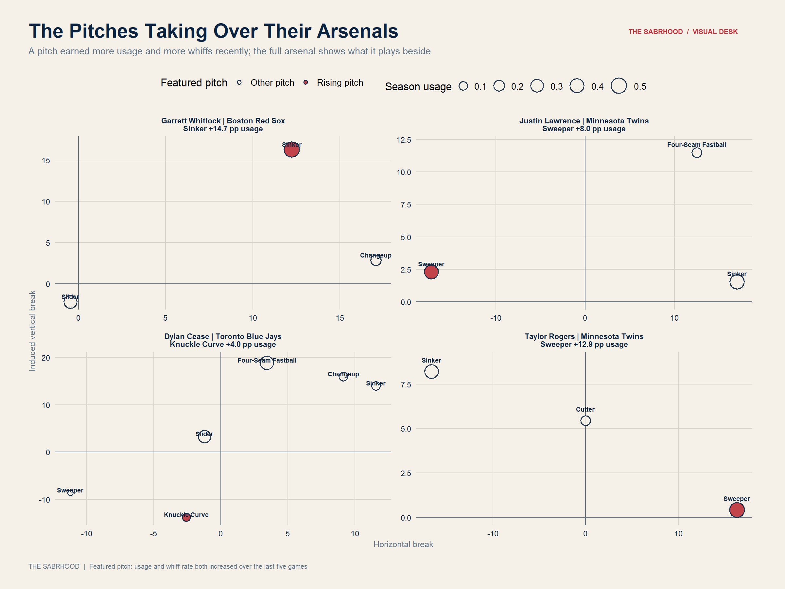
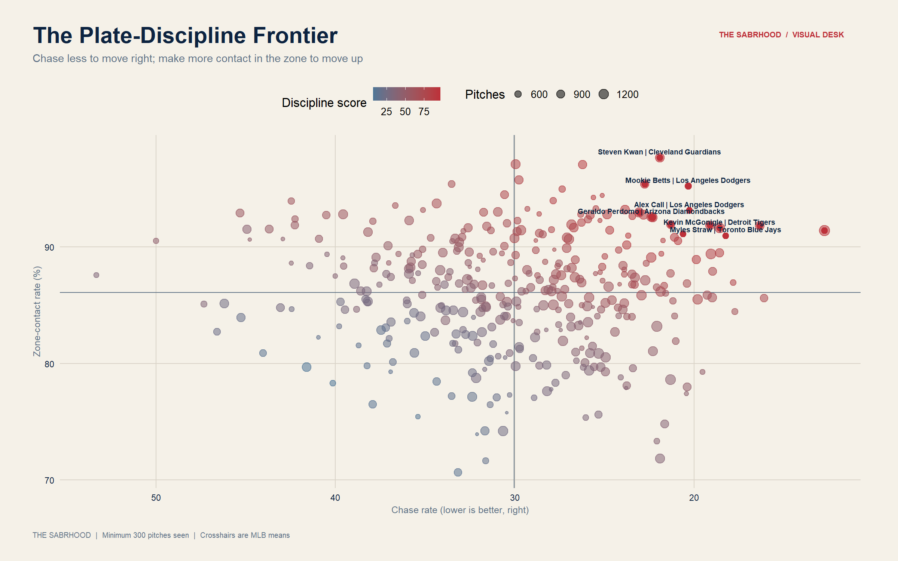

Breaking identity
91.4
Mason Miller
San Diego Padres | Slider
Horizontal breakIVB
Average velocity87.8 mph
Pitch design, translated
Velocity and movement matter. So do location, the previous pitch, the hitter’s handedness, and the count.
Movement location, velocity, bat-missing, chase, and usage combine into a transparent pitch-quality board.
San Diego Padres | Slider
Philadelphia Phillies | Changeup
New York Yankees | Splitter
Athletics | Splitter
New York Mets | Changeup
Athletics | Curveball
At least 50 swings and 100 total pitches in the underlying product.
| Pitcher | Team | Pitch | Pitches | Usage | Velo | Whiff | Chase | Changed from prior |
|---|---|---|---|---|---|---|---|---|
| Mason Miller | San Diego Padres | Slider | 265 | 55.9% | 87.8 | 61.1% | 41.2% | 39.9% |
| Aaron Ashby | Milwaukee Brewers | Slider | 115 | 18.0% | 85.0 | 53.8% | 43.4% | 67.4% |
| Fernando Cruz | New York Yankees | Splitter | 266 | 60.9% | 80.0 | 53.5% | 35.2% | 40.5% |
| Riley O’Brien | St. Louis Cardinals | Sweeper | 150 | 33.6% | 83.7 | 52.5% | 33.6% | 69.8% |
| Brent Headrick | New York Yankees | Slider | 186 | 40.5% | 83.7 | 52.2% | 36.9% | 52.1% |
| Jeff Hoffman | Toronto Blue Jays | Slider | 222 | 42.0% | 87.3 | 52.0% | 41.1% | 45.4% |
| Tyler Phillips | Miami Marlins | Curveball | 133 | 18.4% | 83.7 | 51.8% | 37.9% | 80.4% |
| Anthony Nunez | Baltimore Orioles | Sweeper | 170 | 37.6% | 85.9 | 51.4% | 39.1% | 45.3% |
| Chase Burns | Cincinnati Reds | Slider | 443 | 39.7% | 90.8 | 51.1% | 41.7% | 64.2% |
| Trevor Megill | Milwaukee Brewers | Knuckle Curve | 152 | 38.2% | 87.6 | 50.6% | 41.0% | 49.6% |
The detector requires the pitch to gain usage and whiffs across the recent five-game window. Every card keeps the rest of the arsenal visible so the featured pitch is analyzed as part of a complete plan.
Boston Red Sox · throws R
Minnesota Twins · throws R
Toronto Blue Jays · throws R
Minnesota Twins · throws L

The final five appearances are compared with the non-overlapping earlier season. Percentage-point movement is paired with a same-pitch z-score and both window sizes.
Philadelphia Phillies · Knuckle Curve
New York Mets · Sinker
Miami Marlins · Sweeper
Chicago White Sox · Four-Seam Fastball
Chicago Cubs · Changeup
Minnesota Twins · Slider
Large usage shifts lead the ranking; velocity, horizontal break, induced vertical break, and whiff changes show what else moved.
| Rank | Pitcher | Team | Pitch | Earlier N | Recent N | Earlier use | Recent use | Delta | Peer z | Velo delta | HB delta | IVB delta | Whiff delta |
|---|---|---|---|---|---|---|---|---|---|---|---|---|---|
| 1 | Aaron Nola | Philadelphia Phillies | Knuckle Curve | 258 | 167 | 31.7% | 38.4% | +6.7 pts | -1.7 SD | 0.0 | +0.3 | +0.1 | -3.9% |
| 2 | Sean Burke | Chicago White Sox | Knuckle Curve | 185 | 86 | 23.4% | 18.8% | -4.6 pts | -1.7 SD | +0.7 | -1.4 | -0.1 | +7.1% |
| 3 | Jack Flaherty | Detroit Tigers | Knuckle Curve | 163 | 93 | 18.6% | 22.5% | +3.9 pts | -1.7 SD | +0.4 | +0.0 | -1.5 | -7.8% |
| 4 | Cade Cavalli | Washington Nationals | Knuckle Curve | 220 | 127 | 26.2% | 29.6% | +3.4 pts | -1.7 SD | +1.7 | +0.7 | +2.1 | -2.5% |
| 5 | José Soriano | Los Angeles Angels | Knuckle Curve | 232 | 130 | 24.5% | 27.1% | +2.6 pts | -1.7 SD | -0.8 | +1.0 | -0.3 | +0.4% |
| 6 | Shane Baz | Baltimore Orioles | Knuckle Curve | 286 | 162 | 32.8% | 34.4% | +1.6 pts | -1.7 SD | -0.4 | +0.9 | +0.2 | +3.4% |
| 7 | Zac Gallen | Arizona Diamondbacks | Knuckle Curve | 165 | 88 | 19.4% | 20.6% | +1.2 pts | -1.7 SD | -0.1 | -1.8 | -1.0 | -3.6% |
| 8 | Ben Brown | Chicago Cubs | Knuckle Curve | 183 | 149 | 35.7% | 35.5% | -0.3 pts | -1.7 SD | +0.0 | +0.3 | +0.9 | -2.2% |
| 9 | Kyle Freeland | Colorado Rockies | Knuckle Curve | 140 | 94 | 23.5% | 21.1% | -2.4 pts | -1.7 SD | -0.4 | -1.3 | +1.8 | +1.6% |
| 10 | Andre Pallante | St. Louis Cardinals | Knuckle Curve | 132 | 83 | 18.1% | 18.7% | +0.5 pts | -1.7 SD | +1.8 | +0.2 | +1.9 | +1.1% |
| 11 | George Kirby | Seattle Mariners | Knuckle Curve | 86 | 46 | 10.4% | 9.8% | -0.6 pts | -1.7 SD | +0.6 | +0.3 | +0.7 | +1.6% |
| 12 | Joe Ryan | Minnesota Twins | Knuckle Curve | 102 | 60 | 12.2% | 12.0% | -0.2 pts | -1.7 SD | +1.6 | +2.5 | +0.6 | +3.1% |
| 13 | Keider Montero | Detroit Tigers | Knuckle Curve | 78 | 71 | 12.5% | 17.1% | +4.7 pts | -1.7 SD | +0.6 | +1.8 | +2.3 | +9.2% |
| 14 | Walker Buehler | San Diego Padres | Knuckle Curve | 108 | 32 | 14.7% | 8.0% | -6.7 pts | -1.7 SD | +2.2 | +1.8 | +0.1 | -22.2% |
| 15 | Trevor Megill | Milwaukee Brewers | Knuckle Curve | 127 | 25 | 39.2% | 33.8% | -5.4 pts | -1.7 SD | +0.6 | -0.1 | -0.7 | +13.1% |
| 16 | Robbie Ray | San Francisco Giants | Knuckle Curve | 64 | 47 | 7.4% | 10.2% | +2.8 pts | -1.7 SD | +1.1 | -2.0 | +1.1 | +15.1% |
| 17 | Louis Varland | Toronto Blue Jays | Knuckle Curve | 154 | 20 | 29.1% | 28.6% | -0.5 pts | -1.7 SD | -0.1 | -2.5 | -2.4 | +4.4% |
| 18 | Dylan Cease | Toronto Blue Jays | Knuckle Curve | 54 | 54 | 7.6% | 11.7% | +4.0 pts | -1.7 SD | +0.0 | +0.4 | +0.8 | +27.8% |
| 19 | Drew Pomeranz | Los Angeles Angels | Knuckle Curve | 84 | 16 | 27.8% | 21.6% | -6.2 pts | -1.7 SD | -0.7 | +1.9 | -1.0 | -20.0% |
| 20 | Clay Holmes | New York Mets | Sinker | 150 | 267 | 43.0% | 55.7% | +12.8 pts | +0.9 SD | +0.2 | +0.8 | +0.4 | +3.4% |
| 21 | JT Brubaker | San Francisco Giants | Sinker | 218 | 71 | 46.3% | 58.2% | +11.9 pts | +0.9 SD | -0.5 | -1.0 | -1.0 | -7.0% |
| 22 | Ryan Walker | San Francisco Giants | Sinker | 161 | 57 | 71.2% | 59.4% | -11.9 pts | +0.9 SD | -0.3 | -0.6 | +0.5 | -10.4% |
| 23 | José A. Ferrer | Seattle Mariners | Sinker | 281 | 74 | 66.3% | 77.9% | +11.6 pts | +0.9 SD | +1.0 | +1.2 | -0.3 | -8.9% |
| 24 | Logan Webb | San Francisco Giants | Sinker | 255 | 121 | 38.1% | 27.0% | -11.1 pts | +0.9 SD | -0.1 | -2.0 | -0.5 | -7.0% |
| 25 | Kumar Rocker | Texas Rangers | Sinker | 245 | 119 | 37.2% | 26.4% | -10.7 pts | +0.9 SD | -0.7 | -1.4 | +0.1 | -6.5% |
Pitch-level discipline separates hitters who avoid expanding the zone from hitters who make exceptional contact when they do swing.

| Rank | Hitter | Team | Pitches | Swing | Whiff | Chase | Zone contact | Score |
|---|---|---|---|---|---|---|---|---|
| 1 | Mookie Betts | Los Angeles Dodgers | 606 | 40.8% | 11.7% | 20.4% | 95.2% | 96.7 |
| 2 | Steven Kwan | Cleveland Guardians | 1,054 | 35.9% | 6.6% | 21.9% | 97.7% | 96.0 |
| 3 | Alex Call | Los Angeles Dodgers | 452 | 42.3% | 11.0% | 20.3% | 93.2% | 95.9 |
| 4 | Sal Frelick | Milwaukee Brewers | 934 | 42.2% | 9.4% | 22.8% | 95.4% | 94.3 |
| 5 | Kevin McGonigle | Detroit Tigers | 1,224 | 41.9% | 12.9% | 18.6% | 91.6% | 93.2 |
| 6 | Chase DeLauter | Cleveland Guardians | 1,034 | 42.2% | 13.3% | 19.1% | 91.9% | 92.9 |
| 7 | Trent Grisham | New York Yankees | 1,055 | 36.0% | 15.0% | 16.3% | 91.8% | 92.7 |
| 8 | Myles Straw | Toronto Blue Jays | 479 | 37.0% | 12.4% | 18.3% | 91.0% | 92.4 |
| 9 | Geraldo Perdomo | Arizona Diamondbacks | 1,174 | 39.9% | 10.0% | 22.4% | 92.6% | 92.0 |
| 10 | Taylor Ward | Baltimore Orioles | 1,427 | 31.9% | 16.0% | 12.8% | 91.4% | 91.3 |
| 11 | Xavier Edwards | Miami Marlins | 1,173 | 40.3% | 13.1% | 23.1% | 93.0% | 91.0 |
| 12 | Will Smith | Los Angeles Dodgers | 858 | 41.3% | 14.1% | 21.3% | 92.0% | 90.7 |
Every pitch can be evaluated relative to the pitch before it.
Measures how far consecutive pitches move across the hitting window.
Hard-hit and barrel-proxy fields remain explicitly labeled.